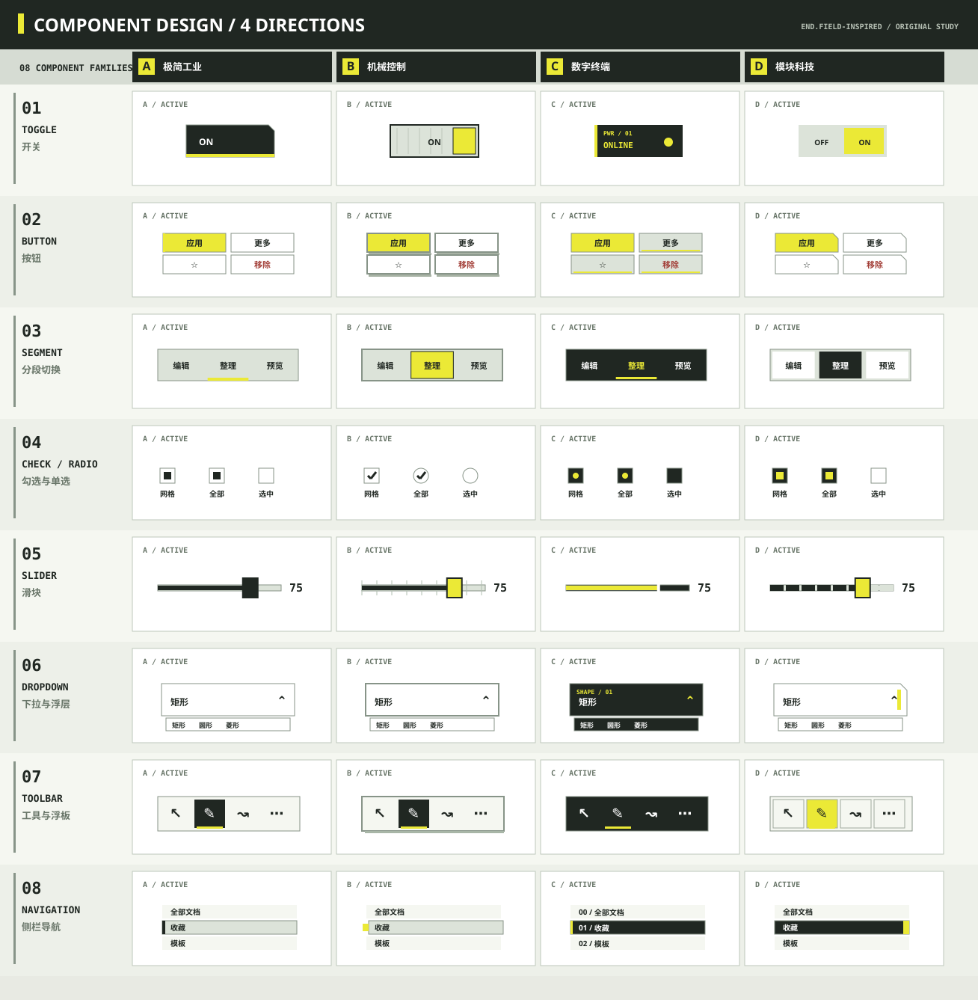
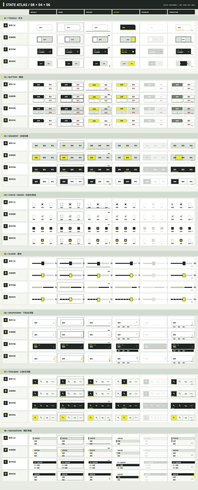
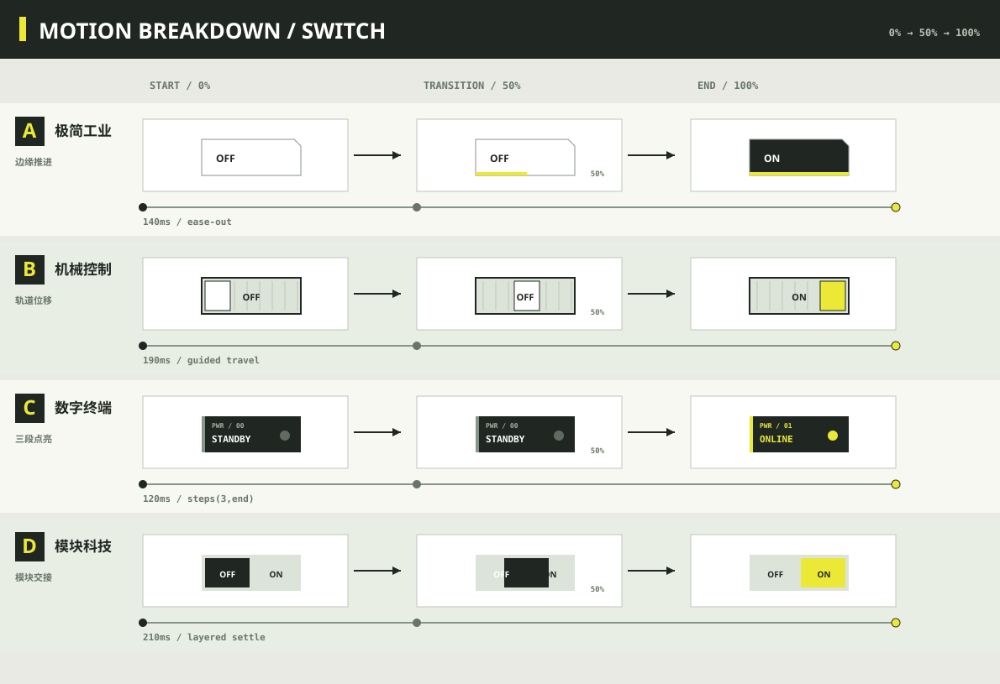

01 / LIVE
同屏操作，直接比较反馈
触摸、鼠标或键盘均可操作。顶部的“减少动态效果”会立即停止位移与装饰过渡；“重播交互”将组件复位并演示一次切换。
COMPONENT同任务 / 同尺寸
A极简工业Minimal Industrial
B机械控制Mechanical Control
C数字终端Digital Terminal
D模块科技Modular Tech
02 / FORM
下载横向对比 SVG ↗
八类组件 × 四种造型
相同尺寸、相同任务和相同激活条件。图像独立于交互原型生成，适合放大比较外形、信息层级及触控热区。


03 / STATE
下载状态图 SVG ↗
默认到过渡中间态
每类组件均按 A–D 四行、Default / Hover / Pressed / Active / Disabled / Transition 六列展示。Hover 只供鼠标使用，触控依靠 Pressed 与 Active。


04 / SYSTEM
下载动画分解 SVG ↗
运动机制与设计取舍
下列时间和曲线是本实验的原创提案，不是官方测量。分数是设计师预评估，尚无真实用户测试。


设计师初步评估 1 弱 — 5 强；“成本”分数越高表示越容易维护
| 评估维度 | A 极简工业 | B 机械控制 | C 数字终端 | D 模块科技 |
|---|
RECOMMEND / 01
推荐混合方案
A 用于高频导航、普通按钮和表单；B 用于开关与滑块；C 用于数值、状态提示和精确反馈；D 只用于画布浮动工具台与关键模式切换。统一触控热区、字号和信号色，避免四套造型同时争夺视觉重心。
研究依据：终末地官方干员情报、官网玩法展示、官方框选与操作反馈说明。具体观察、推断与迁移边界见 设计说明。